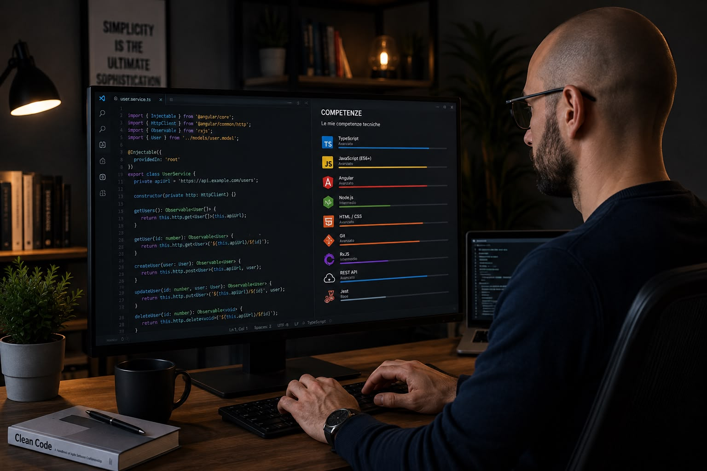

COMPETENZE
Quality Assurance & Test Automation
Un insieme di competenze tecniche, metodologiche e strumenti costruiti attraverso esperienza professionale e formazione continua
Il mio approccio alla Quality Assurance combina software testing, automazione, API validation, database testing, security e metodologie Agile

QUALITY ASSURANCE
QA & Software Testing
La qualità del software parte dalla comprensione dei requisiti e dalla capacità di verificare sistematicamente il comportamento del sistema
Functional Testing
Verifica delle funzionalità applicative rispetto ai requisiti e ai comportamenti attesi
Integration Testing
Verifica delle interazioni tra moduli, servizi, API e componenti differenti di un sistema
Regression Testing
Validazione delle funzionalità esistenti dopo modifiche, release e aggiornamenti applicativi
System & E2E Testing
Verifica dei flussi completi attraverso l'intero sistema
AUTOMATION
Test Automation
L'automazione permette di rendere il processo di testing più ripetibile, scalabile e integrabile nei processi di Continuous Integration
Java
Linguaggio utilizzato per lo sviluppo di framework di test automation
JavaScript
Utilizzato per automazione e scripting
TypeScript
Utilizzato con Playwright per UI testing
Selenium WebDriver
Automazione end-to-end di applicazioni web
Playwright
Framework moderno per UI testing e automazione cross-browser
TestNG
Framework Java per test automatizzati
API & INTEGRATION
API Testing
La validazione delle API è una componente fondamentale del testing moderno
REST API
Validazione delle richieste, risposte, status code e payload
Postman
Creazione ed esecuzione di collection e validazione delle API
Newman
Esecuzione automatizzata delle collection Postman
Swagger
Analisi della documentazione API e validazione dei servizi
API Validation
Request → Service → Response
DATA
Database & Data Validation
La qualità dei dati è parte integrante della qualità del software
SQL
Query e verifiche sui dati
PL/SQL
Analisi e validazione dei dati
Oracle
Data validation e database testing
Data Validation
Verifica della consistenza dei dati
SECURITY
Security Testing
La qualità di un sistema riguarda anche la sua sicurezza
Burp Suite
Analisi delle richieste HTTP e supporto al security testing
OWASP ZAP
Security assessment e analisi delle vulnerabilità web
Security Testing
Identificazione di comportamenti e vulnerabilità potenziali
DEVOPS & AGILE
Tools & Methodologies
La Quality Assurance vive all'interno del ciclo di sviluppo software
IL MIO APPROCCIO
Non si tratta solo di eseguire test
Per me fare Quality Assurance significa comprendere il sistema nel suo insieme, analizzare i requisiti, individuare i punti critici e cercare di anticipare i problemi prima che arrivino all'utente
L'automazione diventa quindi uno strumento per aumentare la qualità, la velocità e la ripetibilità del processo di testing
CONTINUA IL TOUR
Scopri anche la mia storia
Esperienze professionali, formazione e percorso personale
→ Chi sono Home